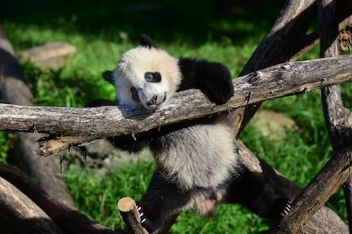

Pandas
Home
Capybaras
Puppies
Pandas used to be my favorite animal, but now they are my second favorite. I used to watch a panda named Bei Bei in China on Youtube, but then they released him back into the wild. Bei Bei is my favorite panda and Qing Bao, Ling-Ling, Hsing-Hsing, Tai Shan, and Bao Bao are my other favorite pandas. I miss Bei Bei everyday and I hope he is having fun in the wild lands of China. Here are some facts about pandas:
- They are exclusively herbivores and they eat up to 50 pounds of bamboo per day.
- 99% of a panda's diet is bamboo
- The largest popultion of pandas is in China and they are native to China.
- They have a black and white coat.
- They poop roughly 40+ times a day
- Unlike other bears, pandas do not hibernate because thei8r diet cannot store enough fat.
- Thanks to conservation efforts, there are over 18,000 pandas in the wild(including Bei Bei), and, as of recently, they are are no longer classified as endangered, but remain vulnerable.
This is Bei Bei:
